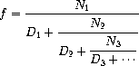

Q.
a. An infinite continued fraction is an expression of the form

As an example, one can show that the infinite continued fraction expansion with the \(N_i\) and the \(D_i\) all equal to 1 produces \(1/\phi\), where \(\phi\) is the golden ratio (described in section 1.2.2). One way to approximate an infinite continued fraction is to truncate the expansion after a given number of terms. Such a truncation – a so-called k-term finite continued fraction – has the form

Suppose that n and d are procedures of one argument (the term index \(i\)) that return the \(N_i\) and \(D_i\) of the terms of the continued fraction. Define a procedure cont-frac such that evaluating (cont-frac n d k) computes the value of the \(k\)-term finite continued fraction. Check your procedure by approximating \(1/\phi\) using
for successive values of k. How large must you make k in order to get an approximation that is accurate to 4 decimal places?
b. If your cont-frac procedure generates a recursive process, write one that generates an iterative process. If it generates an iterative process, write one that generates a recursive process.